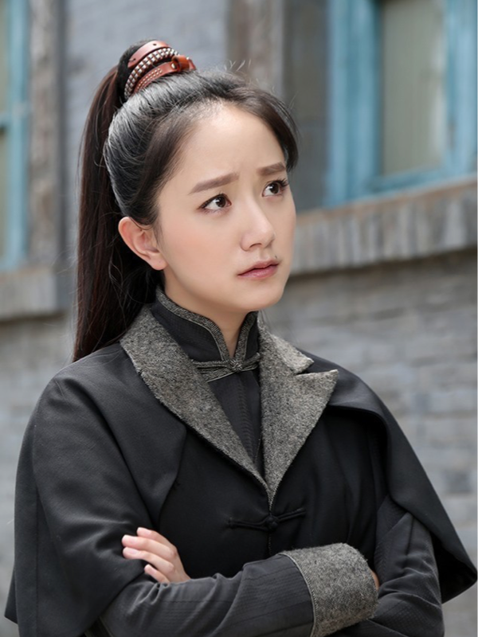
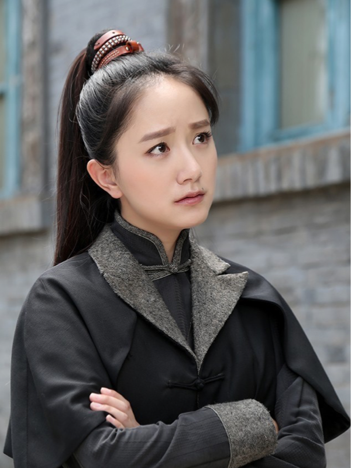

李倩
剧照
 

李倩，1984年3月6日出生于湖南省长沙市，中国影视女演员。
早年经历
李倩的外祖父是南下干部，后定居桃江，为桃江稀土金属冶金厂副厂长，李倩出生时其父母都是该厂的工人,1989年，李倩被送到长沙青少年宫学习舞蹈，并于1995年考入北京陈爱莲舞蹈学校。
演艺经历
- 2000年，16岁的李倩参演黄海冰、王艳主演的电视剧《武林外史》，饰演“小泥巴”；
- 2001年，拍摄吴子牛执导的古装剧《天下粮仓》，饰演“小梳子”一角。
- 2003年，作为内地演员参演TVB电视剧《大唐双龙传》，饰演宋玉致。
- 2007年，与刘烨、李光洁、沙溢、赵琳主演《我们生活的年代》，饰演贤惠成熟的江小荷。
- 2008年，在电视剧《花篮花儿香》中饰演革命战士“周安娜”。
- 2011年，参演冯小刚电影《一九四二》，饰演张国立的儿媳妇，身怀六甲的难民；
- 2013年，宁财神编剧的《龙门镖局》，李倩饰演吕青橙,古怪精灵且武功高强的侠女;
- 2015年，李倩与何政军合作拍摄禁毒题材电影《凤凰花开》；
- 2016年，主演新型抗战史诗剧《一剑横空》，饰演女主角龙梅；
- 2019年，与黄志忠、吴刚等合作主演的刑侦悬疑剧《神探柯晨》播出。
获奖记录
2011年，第四届上海大学生电视节大学生喜爱女演员奖
2017年，第12届华语青年影像论坛年度新锐女演员奖
2018年，凭借主演作品《审讯者》亮相上海电视节“白玉兰绽放”颁奖典礼
2022年，中国电视好演员
人物评价
2000年，在电视剧《武林外史》中，李倩崭露头角，在剧中饰演“小泥巴”，和黄海冰、王艳等人出演对手戏，李倩古灵精怪、纯真无暇的气质扑面而来，给观众带来了另一种美的享受，李倩更是凭借自身的气质和毫无修饰的性格把这个角色演绎的入木三分，“小泥巴”也成为李倩诸多经典角色中的一个（北青网评）
作品集
| 时间 | 作品 | 角色 |
| 2000年 | 武林外史 | 小泥巴 |
| 2001年 | 天下粮仓 | 小梳子 |
| 2003年 | 大唐双龙传 | 宋玉致 |
| 2007年 | 我们生活的年代 | 江小荷 |
| 2008年 | 花篮花儿香 | 周安娜 |
| 2009年 | 成长 | 小苏 |
| 2011年 | 一九四二 | 难民 |
| 2013年 | 龙门镖局 | 吕青橙 |
| 2015年 | 凤凰花开 | 唐爽 |
| 2016年 | 一剑横空 | 龙梅 |
| 2019年 | 神探柯晨 | 向羽 |
| 2020年 | 我是余欢水 | 张妈妈 |